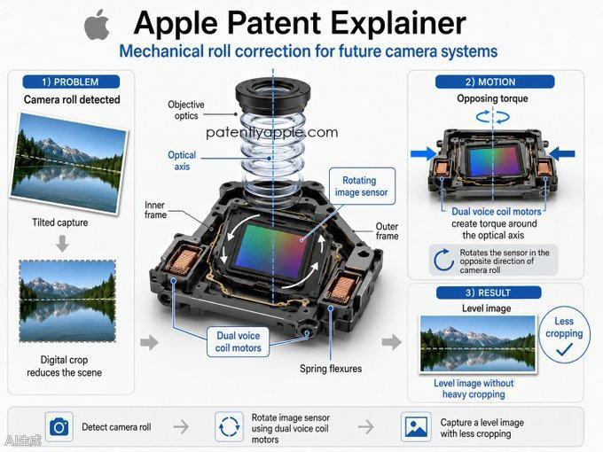

카메라 롤(Camera Roll)의 정의
카메라 롤(Camera Roll)은 카메라가 자체 광축을 중심으로 회전하면서 화면 내 지평선이 수평이 아니거나 수직 물체가 화면 가장자리로 기울어지는 현상을 의미합니다. 이는 주로 손으로 촬영할 때 손목의 미세한 움직임으로 인해 발생하며, 화면에 '기울어짐'을 유발하는 주요 원인 중 하나입니다.
물리적 회전을 통한 수평 보정
IT之家의 보도에 따르면, Apple은 촬영 후 크롭이나 회전과 같은 소프트웨어 방식에만 의존하지 않고 물리적인 방식으로 이미지 센서의 자세를 조정하는 기술을 도입할 예정입니다. 이 핵심 구조에는 물체 렌즈, 이미지 센서, 회전 가능 프레임, 액추에이터 및 컨트롤러가 포함됩니다.
이미지 센서는 기판에 장착되며, 이 기판은 카메라 광축을 따라 회전할 수 있는 프레임에 의해 지지됩니다. 카메라 외관이 한 방향으로 기울어지면, 컨트롤러는 센서 프레임을 반대 방향으로 구동하여 롤링으로 인한 화면 기울어짐을 상쇄합니다.
구동 메커니즘 및 구조
광축 양측에는 각각 2개의 Voice Coil Motor가 배치되며, 각 모터는 자석 구성 요소와 코일 구성 요소를 포함합니다. 전류가 공급되면 코일에서 로렌츠 힘이 발생하며, 두 개의 모터는 크기는 동일하고 방향은 반대인 힘을 출력하여 광축을 중심으로 토력(Torque)을 형성하고 센서 기판과 이미지 센서의 회전을 유도합니다.
지지 구조에 있어 해당 특허는 내부 프레임과 외부 프레임을 포함하는 광학 손떨림 보정 브래킷을 채택했습니다. 내부 프레임은 센서 기판과 이미지 센서를 고정하고, 외부 프레임은 카메라 외관에 고정되며, 두 프레임은 스프링 형태의 유연한 연결체로 연결됩니다.
이 유연한 연결체는 내부 프레임의 회전을 허용하는 동시에 복원력을 제공하며, 이를 통해 컨트롤러가 코일 전류를 조절하여 센서를 목표 방향으로 안정적으로 유지할 수 있도록 돕습니다.
총평
Apple은 소프트웨어 기반의 후처리 방식이 아닌 물리적인 이미지 센서 회전 기술을 통해 카메라 롤 현상을 해결하려는 특허를 확보했습니다. 이 시스템은 Voice Coil Motor와 전용 프레임 구조를 활용하여 실시간으로 센서 위치를 보정함으로써 촬영 시 발생하는 화면 기울어짐을 효과적으로 방지하는 것을 목표로 합니다.
专利技术概述
根据科技媒体 PatentlyApple 在 X 平台发布的报道，Apple 已获批一项关于相机模块的专利。该技术旨在通过物理旋转图像传感器来校成由于手持拍摄产生的“相机滚动”（Camera Roll）导致的画面倾斜。所谓“相机滚动”，是指因用户转腕动作导致地平线不水平或垂直物体偏离边缘的情况。
核心硬件组成
该设计不再仅依赖于后期处理的裁剪和旋转，而是通过物理结构调整传感器姿态。其核心组件包括：
- 物镜
- 图像传感器
- 可旋转框架
- 执行器
- 控制器
驱动原理与支撑结构
该系统利用特定的机械结构和动力源来抵消倾斜：
- 动力源：在光轴两侧各布置 2 个音圈电机（Voice Coil Motor），通过通电产生的洛伦兹力产生扭矩，驱动传感器基板绕光轴旋转。
- 支撑结构：采用包含内框和外框的支架设计。其中内框固定传感器基板和图像传感器，外框固定在相机外壳上。
- 连接机制：内、外框通过弹簧状柔性连接件连接，该部件允许内框旋转并提供复位力，协助控制器将传感器稳定在目标方向。
总结
Apple 获批一项旨在解决手持拍摄时画面倾斜问题的专利。该技术通过在相机模块中加入音圈电机驱动的物理旋转机构，实时抵消“相机滚动”造成的偏差，从硬件层面提升图像稳定性。
技术背景与核心功能
Apple 近期获批一项相机防抖专利，旨在解决“相机滚动”（Camera Roll）问题。该现象通常指因用户手持拍摄时转动手腕，导致地平线不水平或垂直物体倾斜。不同于传统的后期裁剪和旋转处理，这项新技术通过物理方式调整图像传感器的姿态来抵消由于设备晃动产生的画面倾斜。
硬件结构与驱动原理
该专利描述了一种复杂的机械补偿系统，其核心组件包括：
- 物镜
- 图像传感器
- 可旋转框架
- 执行器
- 控制器
在运行机制上，图像传感器安装在基板上，并由可绕相机光轴转动的框架支撑。当外壳因拍摄动作产生倾斜时，控制器会驱动传感器框架向相反方向转动以抵消偏差。系统利用分布在光轴两侧的 2 个音圈电机（Voice Coil Motor）产生的洛伦兹力形成扭矩，从而带动基板和传感器旋转。
支撑结构采用内框与外框的设计：
- 内框：固定传感器基板和图像传感器。
- 外框：固定在相机外壳上。
- 柔性连接件：作为内、外框之间的连接件，提供旋转空间并提供复位力，确保控制器能将传感器稳定在目标方向。
总结
Apple 申请的这项专利旨在通过物理旋转图像传感器来纠正手持拍摄时的“相机滚动”现象。该技术利用音圈电机驱动的机械结构替代传统的软件算法，从硬件层面实现更精准的画面水平校正。
カメラロール（Camera Roll）の定義
カメラロール（Camera Roll）とは、カメラが自身の光軸を軸に回転することで、画面内の地平線が水平にならなかったり、垂直な物体が画面の端に向かって傾いたりする現象を指します。これは主に手持ち撮影時に手首のわずかな動きによって発生し、映像に「傾き」を生じさせる主な原因の一つです。
物理的な回転による水平補正
IT之家の報道によると、Appleは撮影後のクロップや回転といったソフトウェア的な手法だけに依存するのではなく、物理的な方法でイメージセンサーの姿勢を調整する技術を導入する予定です。この核心となる構造には、以下の要素が含まれます。
- 物体レンズ
- イメージセンサー
- 回転可能なフレーム
- アクチュエーター
- コントローラー
イメージセンサーは基板に取り付けられ、この基盤はカメラの光軸に沿って回転可能なフレームによって支えられます。カメラの外装が一方の方向に傾いた場合、コントローラーはセンサーフレームを逆方向に駆動させ、ローリングによる画面の傾きを相殺します。
駆動メカニズムと構造
光軸の両側にはそれぞれ2つのVoice Coil Motor（VCM）が配置され、各モーターは磁石コンポーネントとコイルコンポーネントを含みます。電流が供給されるとコイルにローレンツ力が発生し、2つのモーターは大きさが同じで方向が逆の力を出力することで、光軸を中心にトルクを形成し、センサー基板とイメージセンサーの回転を誘導します。
支持構造において、この特許は内部フレームと外部フレームを含む光学式手ブレ補正（OIS）ブラケットを採用しています。内部フレームはセンサー基板とイメージセンサーを固定し、外部フレームはカメラの外装に固定されます。これら2つのフレームは、スプリング状の柔軟な連結体によって接続されています。
この柔軟な連結体は、内部フレームの回転を許容すると同時に復元力を提供します。これにより、コントローラーがコイル電流を調整してセンサーを目標の方向に安定して維持できるよう支援します。
まとめ
Appleは、ソフトウェアによる後処理ではなく、物理的なイメージセンサーの回転技術によってカメラロール現象を解決するための特許を取得しました。このシステムはVoice Coil Motorと専用のフレーム構造を活用し、リアルタイムでセンサー位置を補正することで、撮影時に発生する画面の傾きを効果的に防ぐことを目的としています。
Defining Camera Roll
Camera Roll refers to a phenomenon where the horizon within a frame is not level or vertical objects appear tilted toward the edge of the screen because the camera rotates around its own optical axis. This typically occurs during handheld shooting due to subtle movements of the wrist, and it is one of the primary causes of "tilting" in captured images.
Physical Rotation for Leveling
According to reports from IT Home, Apple plans to introduce technology that adjusts the orientation of the image sensor through physical means rather than relying solely on software methods such as cropping or rotating after the shot is taken. The core structure of this system includes:
- Object lens
- Image sensor
- Rotatable frame
- Actuator
- Controller
The image sensor is mounted on a substrate, which is supported by a frame capable of rotating along the camera's optical axis. When the exterior of the camera tilts in one direction, the controller drives the sensor frame in the opposite direction to counteract the tilt caused by rolling.
Drive Mechanism and Structure
Two Voice Coil Motors (VCM) are positioned on each side of the optical axis, with each motor consisting of magnetic and coil components. When current is supplied, Lorentz force is generated within the coils. The two motors produce forces of equal magnitude but in opposite directions to generate torque around the optical axis, inducing rotation of the sensor substrate and the image sensor.
Regarding the support structure, the patent utilizes an optical image stabilization (OIS) bracket that includes internal and external frames. The inner frame secures the sensor substrate and the image sensor, while the outer frame is fixed to the camera housing. These two frames are connected by a spring-like flexible linkage.
This flexible linkage allows for the rotation of the inner frame while providing restorative force. This enables the controller to adjust the coil current to keep the sensor stably oriented toward the target direction.
Summary
Apple has secured a patent to address camera roll by utilizing physical image sensor rotation rather than software-based post-processing. By employing Voice Coil Motors and a specialized dual-frame structure, the system aims to correct the sensor's position in real-time to prevent frame tilting during capture.
